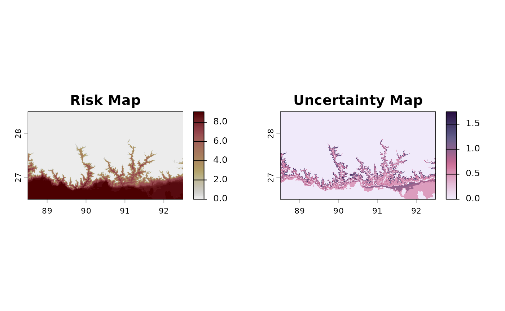
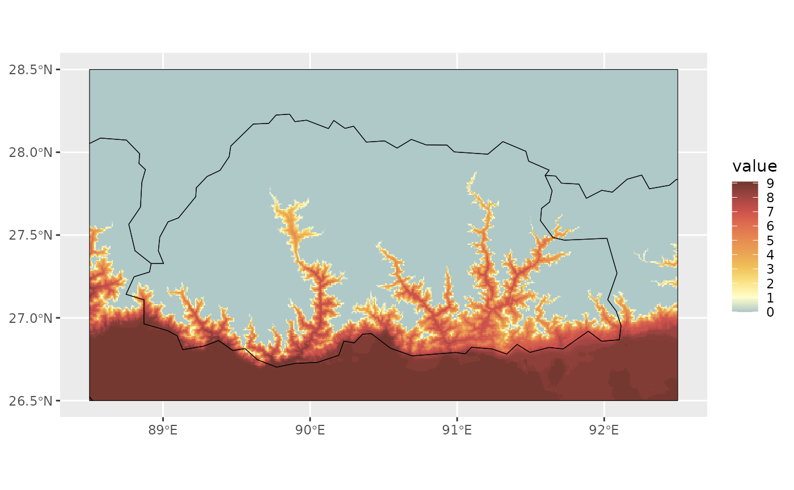
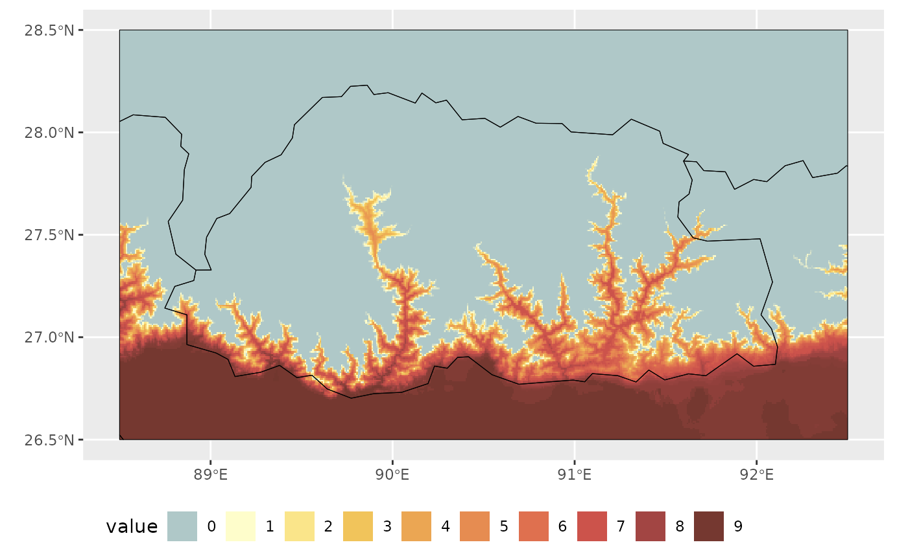
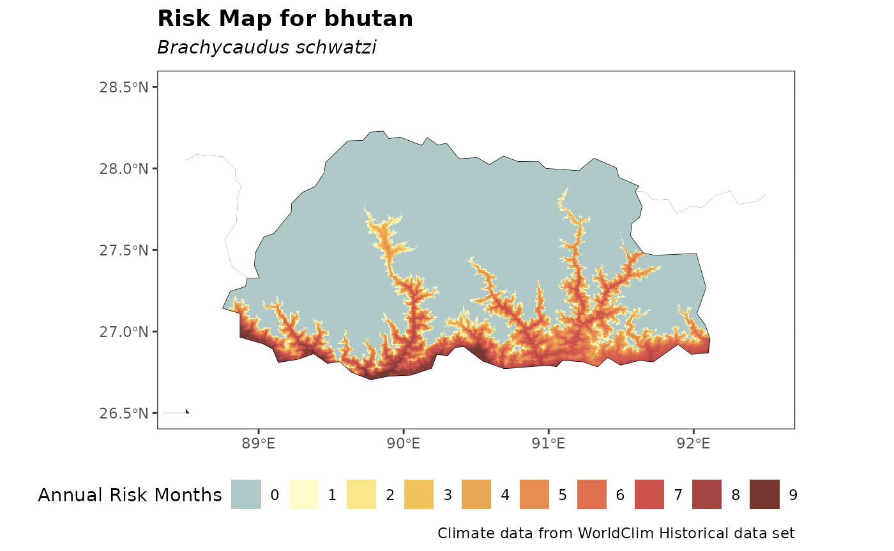
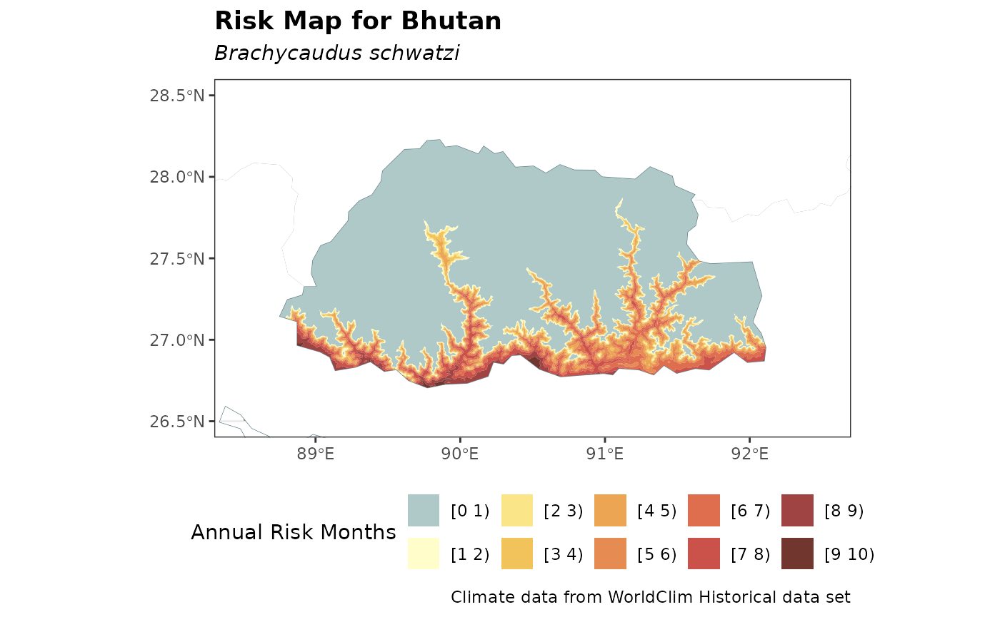

Customize your risk map
The map_risk() function will usually serve to explore
risk projections. However, the raw configuration of the plots in
terra::plot() does not offer many possibilities to
customize visualization for professional purposes. Since the output of
map_risk() that come across with the standard plot is a
SpatRaster, this raster can be then exported using
terra::writeRaster in *.tiff format or it can be
visualized using R packages for raster visualization such as
tidyterra (Hernangómez 2023)
–under ggplot2 (Wickham 2016)
logic– or rasterVis (2023),
among others.
Here we provide an example of customization with
tidyterra for the latest risk raster obtained in the Generating Risk Maps
article.
risk_rast_bhutan <- map_risk(t_vals = boundaries_aphid,
path = tempdir(), # directory to download data
region = "Bhutan",
mask = TRUE,
plot = TRUE,
interactive = FALSE,
verbose = TRUE)#>
#> Computing summary layers...
#>
#> Plotting map...
#>
#> Finished!First, let’s select the risk layer (if we don’t specifically select it, the latest –sd– is used by default1).
library(ggplot2)
risk_layer_bhutan <- risk_rast_bhutan |>
tidyterra::select("mean") # or alternatively, risk_layer_bhutan <- risk_rast_bhutan["mean"]First, we will obtain the contour of world countries using
geodata to place underneath the risk map:
worldmap_sv <- geodata::world()Then, we will crop it using the boundaries of our risk raster without
NAs.
noNA_risk_rast <- risk_layer_bhutan |>
tidyterra::drop_na()
bhutan_sv <- terra::crop(worldmap_sv, noNA_risk_rast)Then, we will use a custom palette based on lajolla palette
from khroma package with a custom color for
0’s:
For now, the map with these custom options and
tidyterra::geom_spatraster() function will look as
follows:
max_risk_bhutan <- terra::minmax(noNA_risk_rast)[2] # for manual scale fill visualization
aphid_risk_map <- ggplot2::ggplot() +
tidyterra::geom_spatraster(data = noNA_risk_rast,
maxcell = Inf) +
tidyterra::geom_spatvector(data = bhutan_sv,
fill = NA,
color = "black") +
ggplot2::scale_fill_gradientn(colours = my_risk_palette[1:(max_risk_bhutan + 1)], # to preserve the scales
na.value = "transparent",
breaks = seq(0, 12, by = 1))
print(aphid_risk_map)
We can improve the legend visualization using
ggplot2::guides() is not correct, but we may correct
it:
aphid_risk_map <- aphid_risk_map +
guides(fill = guide_legend(ncol = 13, #from 0 to 12 possible values
nrow = 1,
byrow = TRUE)) +
theme(legend.position = "bottom")
print(aphid_risk_map)
We can further improve visualization by changing the theme, adding titles and avoid borders overlapping with cells using adjacent region polygons:
#add borders:
china_sv <- worldmap_sv |>
dplyr::filter(NAME_0 == "China")
india_sv <- worldmap_sv |>
dplyr::filter(NAME_0 == "India")
#adapt frame to Bhutan coordinates
bhutan_ext <- terra::ext(bhutan_sv)
species_name_italics <- expression(italic("Brachycaudus schwatzi"))
aphid_risk_map +
theme_bw() +
lims(x = c(bhutan_ext[1], bhutan_ext[2]),
y = c(bhutan_ext[3], bhutan_ext[4]))+
theme(legend.position = "bottom") +
labs(title = "Risk Map for bhutan",
subtitle = species_name_italics,
caption = "Climate data from WorldClim Historical data set",
fill = "Annual Risk Months") +
theme(legend.position = "bottom") +
theme(plot.title = element_text(face = "bold")) +
tidyterra::geom_spatvector(data = china_sv, fill = "white",
color = NA) +
tidyterra::geom_spatvector(data = india_sv, fill = "white",
color = NA)
Similarly, a discrete iso-risk map can be generated using
terra::geom_spatraster_contour_filled() with the previous
approach as follows:
breaks_levels <- purrr::map_chr(.x = seq(0, max_risk_bhutan),
.f = ~paste0("[", .x, " ", .x+1,")")) |>
as.factor()
ggplot2::ggplot() +
theme_bw() +
lims(x = c(bhutan_ext[1], bhutan_ext[2]),
y = c(bhutan_ext[3], bhutan_ext[4]))+
tidyterra::geom_spatraster_contour_filled(data = risk_layer_bhutan,
breaks = seq(0, 12),
maxcell = Inf) +
tidyterra::geom_spatvector(data = worldmap_sv,
fill = NA,
color = "lightblue4") +
ggplot2::scale_fill_manual(values = my_risk_palette,
labels = breaks_levels, na.value = "white") +
theme_bw() +
theme(legend.position = "bottom") +
labs(title = "Risk Map for Bhutan",
subtitle = species_name_italics,
caption = "Climate data from WorldClim Historical data set",
fill = "Annual Risk Months") +
theme(legend.position = "bottom") +
theme(plot.title = element_text(face = "bold")) +
tidyterra::geom_spatvector(data = china_sv, fill = "white",
color = NA) +
tidyterra::geom_spatvector(data = india_sv, fill = "white",
color = NA)